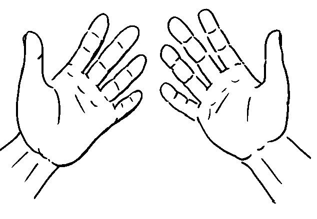
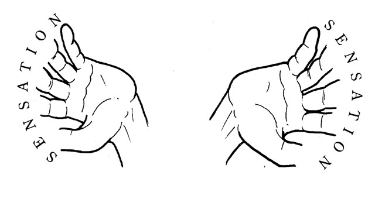
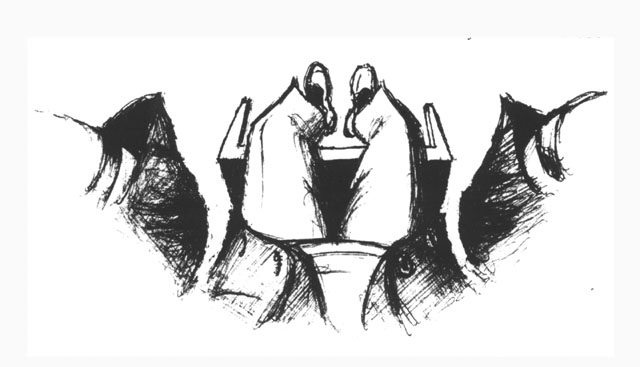

“But I can touch my head!”
Hold your hands out in front of you.
Move them towards yourself and touch your head. You feel something. Going by present evidence, not memory or imagination, does this ‘something’ have colour or shape? How big is it? How solid? Is it a ‘thing’?
Do the sensations you feel occur on the surface of your head or in boundless, awake emptiness? Are you touching your head or your no-head?
My sensations are in this awake emptiness just as everything is in this awake emptiness.
Of course I’ve learned to connect these invisible sensations to the head I see in the mirror – I see my hands touching my head there in the mirror and imagine they are touching the same thing here, though I cannot see anything here. I learned to do this as a child. Associating the touch sensations here with the image there is a vital part of growing up. However, I never see my hands touching my head here – I see them disappearing and then I feel sensation. From my point of view, all these sensations are happening in space here, not in a head. What I am for others, a person with a head, is the opposite of what I am for myself – headless space for sensation.
First be aware of your experience, then make sense of it to society – rather than first accept what society says and then suppress your experience to fit in with society’s view. Only you are where you are – no one but you has the authority to say what you are at zero distance.
When I try and make sense of the difference between what I am for others and what I am for myself, I recognise that to see the world I need my head, my eyes, my brain, and the cells, molecules and particles they are made of. (I also need the atmosphere, the sun, the galaxy…) All these layers are involved in my seeing. But I am not seeing from these layers – I see with and through them from my centre – from this self-evidently aware space. What I am aware of is affected by the state of each of these layers, that I am aware is not. It is not a conditioned person (or brain, or cell, or particle) at centre who is aware but the unconditioned One. In reality, only God sees the stars, hears the wind, greets a friend…